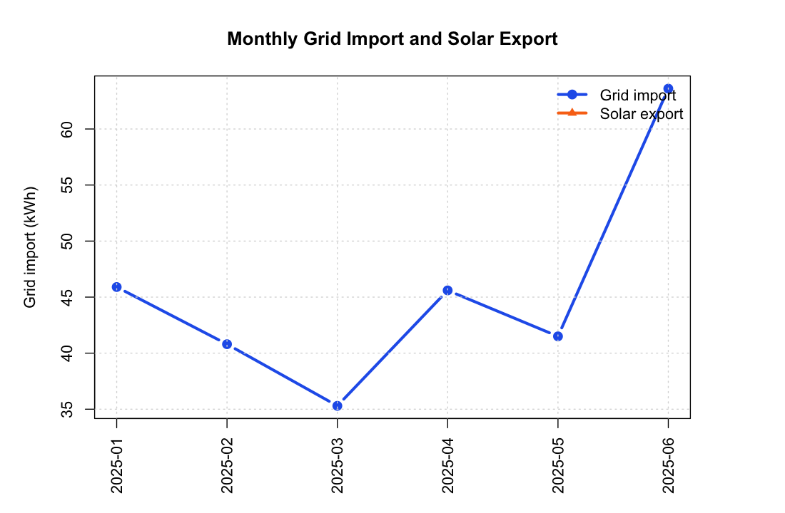
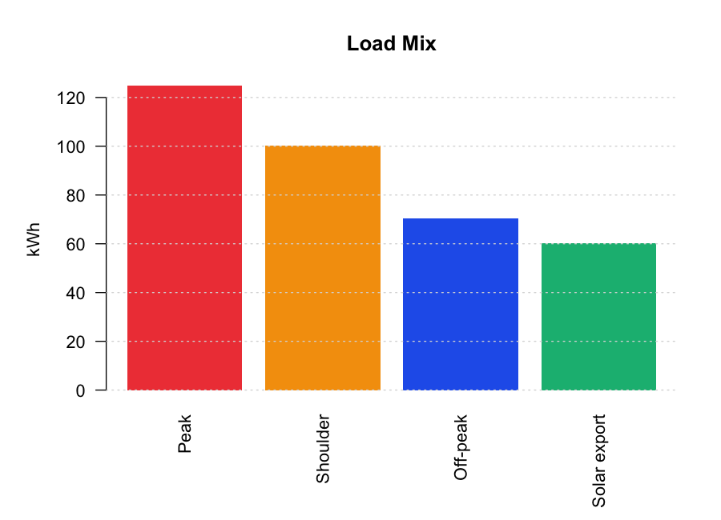
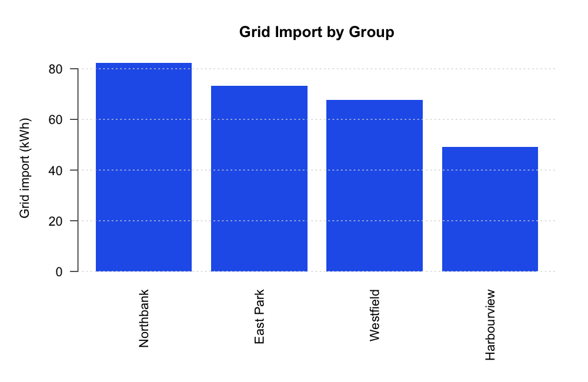

Records18
Days covered18
Grid import272.7 kWh
Solar export60.3 kWh
Estimated cost$101.67
Key Signals
- Highest grid import month: 2025-06 at 63.6 kWh.
- Top grid import group: Northbank at 82.4 kWh.
- Solar exports equal 20.4% of recorded consumption.
- Peak usage is 42.3% of recorded consumption.
Monthly Demand

| month | grid_import_kwh | solar_export_kwh | consumed_kwh | peak_kwh | shoulder_kwh | offpeak_kwh | estimated_bill | month_over_month_import_kwh |
|---|---|---|---|---|---|---|---|---|
| 2025-01 | 45.9 | 11.9 | 50.9 | 22.5 | 17.7 | 10.7 | 17.42 | NA |
| 2025-02 | 40.8 | 16.0 | 49.0 | 21.2 | 16.5 | 11.3 | 15.78 | -5.1 |
| 2025-03 | 35.3 | 12.5 | 40.5 | 17.1 | 14.0 | 9.4 | 13.43 | -5.5 |
| 2025-04 | 45.6 | 7.3 | 47.7 | 19.8 | 16.3 | 11.6 | 16.88 | 10.3 |
| 2025-05 | 41.5 | 11.6 | 43.6 | 17.4 | 15.1 | 11.1 | 15.23 | -4.1 |
| 2025-06 | 63.6 | 1.0 | 64.0 | 27.0 | 20.7 | 16.3 | 22.93 | 22.1 |
Load Mix

| load_type | kwh |
|---|---|
| Peak | 125.0 |
| Shoulder | 100.3 |
| Off-peak | 70.4 |
| Solar export | 60.3 |
Groups

| neighbourhood | records | households | grid_import_kwh | solar_export_kwh | consumed_kwh | peak_share_pct | estimated_bill |
|---|---|---|---|---|---|---|---|
| Northbank | 5 | 2 | 82.4 | 15.5 | 87.8 | 43.2 | 30.65 |
| East Park | 5 | 2 | 73.3 | 21.9 | 83.4 | 42.1 | 27.74 |
| Westfield | 4 | 2 | 67.8 | 7.3 | 69.9 | 41.6 | 24.82 |
| Harbourview | 4 | 2 | 49.2 | 15.6 | 54.6 | 41.9 | 18.46 |